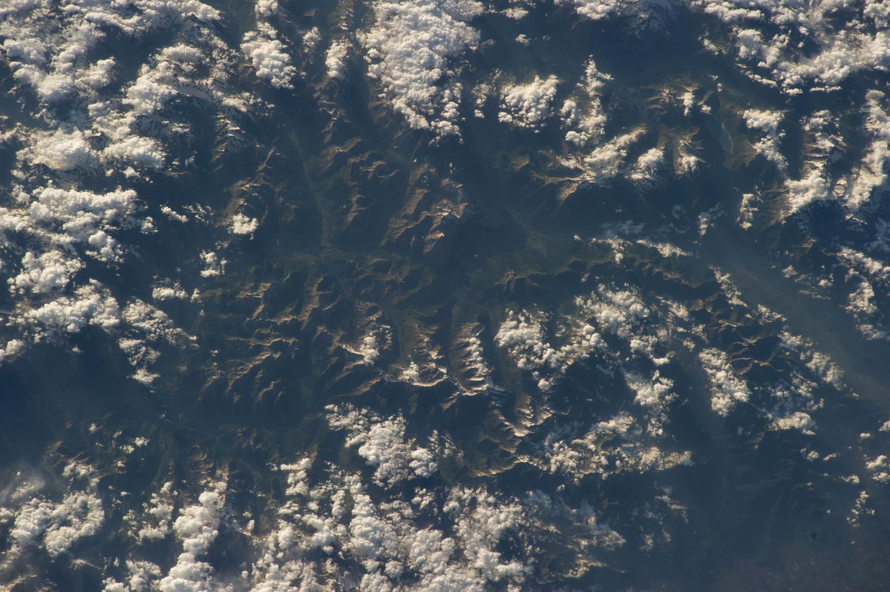

One
Text under the fixed bar: Chromium bends it, Safari and Firefox show the picture there.

Chromium bends whatever is behind the glass. Safari and Firefox bend the picture named as its backdropSource.
Text under the fixed bar: Chromium bends it, Safari and Firefox show the picture there.
More text, so the page scrolls.